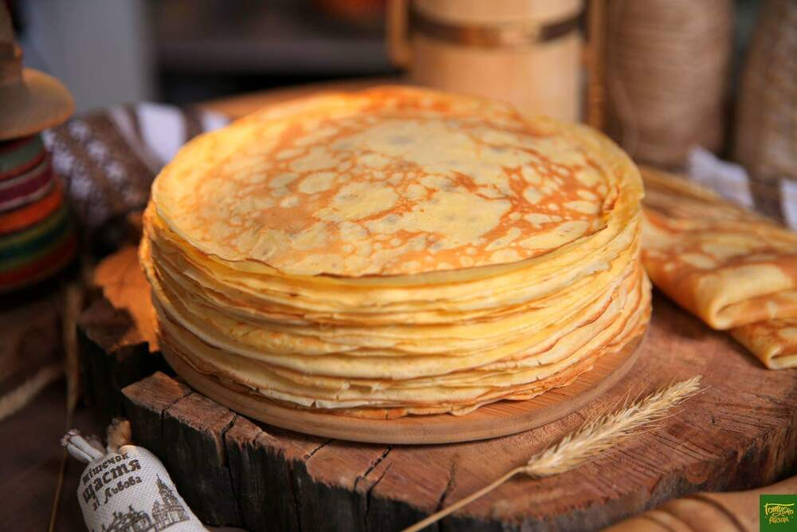

Тонкие блины
Ингридиенты
- Мука - 125 г
- Сахар - 30 г
- Соль - 4 г
- Яйца - 2 шт
- Вода - 200 мл
- Молоко - 200 мл
-
Только при такой пропорции получается самый идеальный тонкий блин. Теперь мы просто-напросто все смешиваем, чтобы у нас не образовалось никаких комочков, сразу взбалтываем очень интенсивно. Удивительно что тесто получается жидким.
 Ничего страшного нужно приловчиться первые два блина вас конечно будет комом, а потом когда вы
поймете в чем суть этих блинов вы будете всегда использовать именно этот рецепт. У нас получилось
вот такое вот тесто. Ему нужно
дать постоять 5 минут можно даже 10 для того чтобы клейковина который находится в муке завязалась
и тесто стало эластичным во время того как тесто стоит его нужно все время помешивать.
Ничего страшного нужно приловчиться первые два блина вас конечно будет комом, а потом когда вы
поймете в чем суть этих блинов вы будете всегда использовать именно этот рецепт. У нас получилось
вот такое вот тесто. Ему нужно
дать постоять 5 минут можно даже 10 для того чтобы клейковина который находится в муке завязалась
и тесто стало эластичным во время того как тесто стоит его нужно все время помешивать.
- Хорошо разогреваем сковородку, потому что, именно на раскалённой сковороде, получаются пористые блины, с дырочками. Смазываем сковородку каплей масла, можно салфеткой пропитанной маслом.
- Льем тесто, жарим.
- Едим